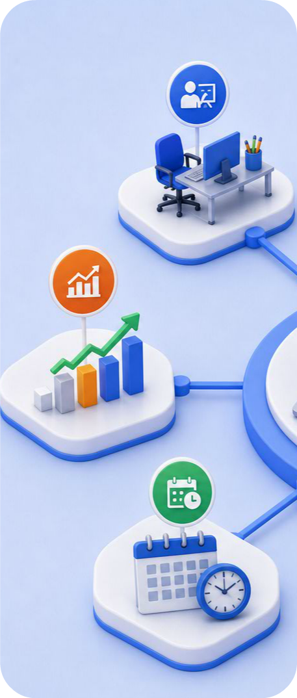
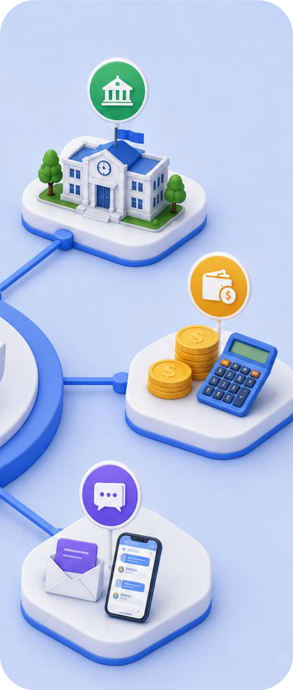

The Complete School ERP Built for Modern Education
Transform the way your institution manages academics, administration, finance, communication, and daily operations with one intelligent platform designed specifically for schools.
AST ERP brings every department together into a single, secure, cloud-based solution that simplifies school management, improves collaboration, and enhances the experience for administrators, teachers, students, and parents.
One Platform. Complete School Management.
AST ERP is a comprehensive School Management System designed to simplify every aspect of educational administration. Built for modern schools and educational institutions, it brings academics, administration, finance, communication, human resources, and campus operations together on one secure cloud-based platform.
From managing admissions and student records to attendance, examinations, fee collection, payroll, transport, library, and parent communication, AST ERP helps schools automate routine tasks, improve operational efficiency, and make informed decisions through real-time data.
Whether you're managing a single campus or a growing multi-branch institution, AST ERP provides the flexibility, scalability, and reliability needed to support your institution's growth while delivering an exceptional experience for administrators, teachers, students, and parents.
Built to Simplify School Management
AST ERP is designed to help educational institutions automate routine tasks, improve operational efficiency, and create a connected digital ecosystem where every stakeholder has access to the information they need.
All-in-One School Management
Manage admissions, academics, attendance, examinations, fees, finance, HR, communication, and campus operations from one integrated platform.
Cloud-Based & Secure
Access your ERP anytime, anywhere through a secure cloud infrastructure with role-based permissions and reliable data protection.
Mobile Apps for Every Stakeholder
Empower administrators, teachers, students, parents, and staff with dedicated mobile applications that keep everyone connected.
Multi-Branch Ready
Manage multiple campuses, branches, and institutions through a centralized system while maintaining independent academic and administrative records.
Quick & Easy Implementation
Get started faster with guided setup, data migration assistance, and structured onboarding designed for educational institutions.
Dedicated Support
Receive ongoing assistance from our support team, along with regular product updates and continuous improvements.
A Complete Digital Ecosystem for Schools
Schools today require more than just software—they need an intelligent platform that connects every department and every stakeholder. AST ERP creates a unified digital ecosystem where information flows seamlessly across academics, administration, finance, and communication.
By replacing manual processes with smart automation, institutions can reduce paperwork, improve accuracy, strengthen collaboration, and focus more on delivering quality education.


Built for Every Educational Institution
AST ERP is designed to support the diverse operational needs of educational institutions across different boards and academic structures.
One Platform. Every Department Connected.
AST ERP combines all essential school operations into a unified platform, helping institutions improve efficiency while reducing paperwork and manual processes.
📚 Academic Management
Admissions, student records, attendance, timetable, examinations, assessments, report cards, and certificates.
💰 Finance & Accounting
Fee management, accounting, online payments, financial reporting, budgets, and reconciliation.
👨🏫 Human Resources
Employee management, attendance, leave, payroll, recruitment, and performance management.
🚌 Campus Operations
Transport, hostel, inventory, asset management, library, health records, and front office operations.
📱 Communication & Engagement
Parent portal, student portal, teacher portal, mobile applications, notifications, SMS, Email, and WhatsApp integration.
📊 Analytics & Reports
Real-time dashboards, MIS reports, operational insights, and data-driven decision-making tools.
Experience a modern interface designed to simplify daily school operations.
Technology That Makes School Management Simpler
Save Administrative Time
Automate repetitive administrative tasks and reduce manual paperwork across departments.
Improve Parent Communication
Keep parents informed with instant notifications through SMS, Email, WhatsApp, and the Parent App.
Make Better Decisions
Access real-time reports, dashboards, and analytics to monitor academic, financial, and operational performance.
Access Anywhere
Manage your institution securely from desktops, laptops, tablets, or mobile devices.
Secure Cloud Platform
Protect institutional data with secure cloud infrastructure, role-based access, encryption, and automated backups.
Easy to Learn
A clean and intuitive interface helps administrators and staff become productive with minimal training.
Connect AST ERP with the Tools Your School Already Uses
Extend your school's capabilities through seamless integrations with trusted platforms and services.
A Smooth Transition to Digital School Management
Our structured implementation process helps schools adopt AST ERP with minimal disruption to day-to-day operations.
Requirement Discussion
Understand your institution's academic structure, workflows, and operational needs.
ERP Configuration
Configure modules, permissions, academic sessions, fee structures, and institutional settings.
Data Migration
Securely import existing student, employee, academic, and financial records into AST ERP.
Staff Training
Provide hands-on training sessions to ensure administrators, teachers, and staff are confident using the system.
Go Live
Launch the ERP with complete operational readiness and ongoing implementation support.
Continuous Support
Receive regular updates, technical assistance, and continuous product enhancements as your institution grows.
Built with Security at the Core
Protecting institutional data is fundamental to everything we build.
Cloud Infrastructure
Reliable cloud hosting designed for performance and accessibility.
Daily Backups
Automated backups help safeguard important institutional information.
SSL Encryption
Secure data transmission using industry-standard encryption protocols.
Role-Based Access
Ensure users only access the information relevant to their responsibilities.
Audit Logs
Track important system activities to improve transparency and accountability.
Secure Authentication
Protect user accounts with secure login mechanisms and access controls.
We're With You Every Step of the Way
Our commitment doesn't end after implementation. We continue to support your institution as it grows and evolves.
- Dedicated onboarding assistance
- Data migration support
- Staff training programs
- Technical support
- Regular product updates
- Knowledge base and documentation
- Continuous platform improvements
Ready to Transform Your School Management?
Take the next step toward smarter school management with an intelligent ERP platform designed to simplify administration, strengthen communication, and support better educational outcomes.
Whether you're managing a single school or multiple campuses, AST ERP provides the tools you need to operate efficiently today and scale confidently for the future.